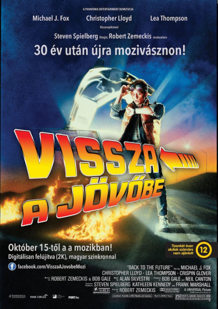

Marty McFly átlagos kamasznak látszik, de van egy őrült barátja, Doki, aki megépítette a plutónium meghajtású időgépet. Dokit váratlanul halálos támadás éri, s Marty is csak az új találmánnyal nyer egérutat. Arra azonban ő sem számít, hogy 1955-be utazik vissza, épp abba az időszakba, amikor szülei is a padot koptatják. A bajt csak fokozza, hogy majdani anyja Marty megérkezése óta ügyet sem vet majdani apjára, ami beláthatalan következményekkel járhat a jövőben. Ha életben akar maradni, el kell érnie, hogy szülei egymásba szeressenek és el kell távolítania az anyját molesztáló Biffet.

| Szerepe | Színész | Magyarhang |
|---|---|---|
| "Marty" Martin McFly | Michael J. Fox | Rudolf Péter |
| "Doc" Dr. Emmett L. Brown | Christopher Lloyd | Rajhona Ádám |